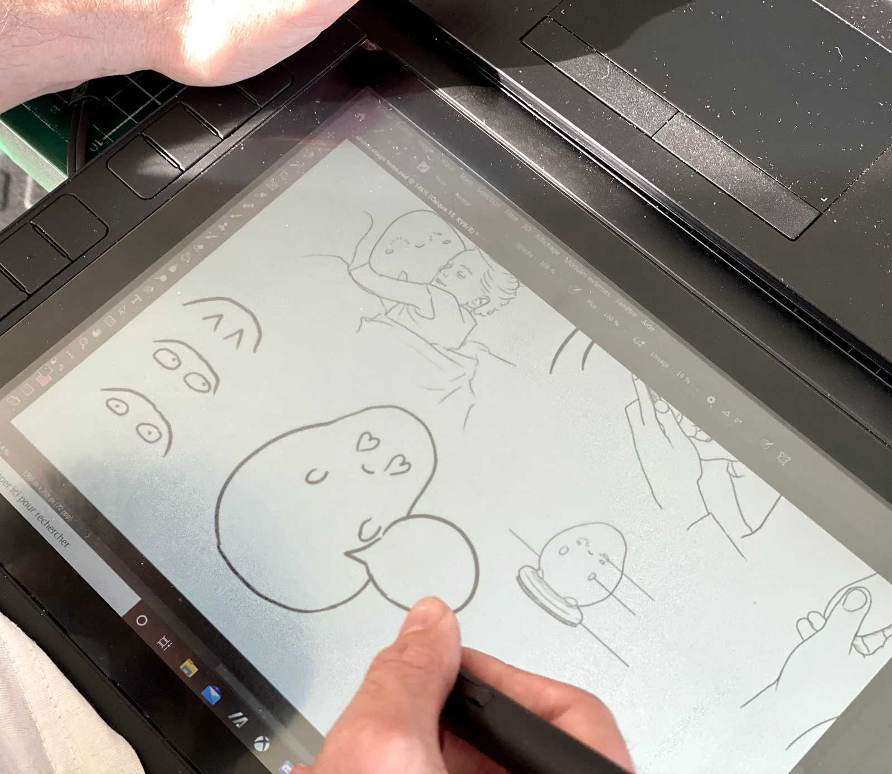
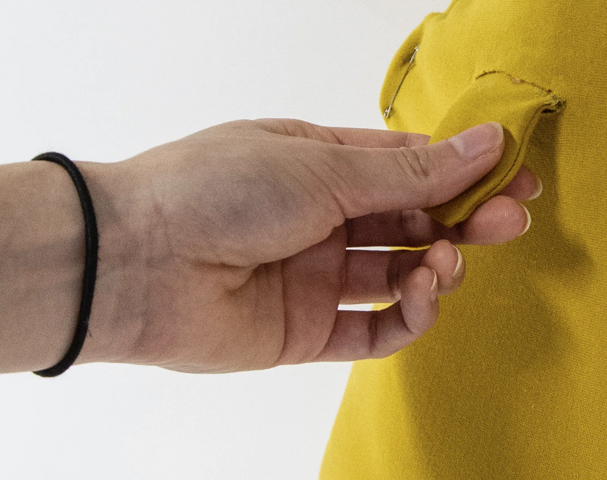

Toms est une peluche connectée imaginée pour aider les enfants hospitalisés à garder le lien avec leurs parents. Elle sert à échanger des messages vocaux et à afficher des émotions.
Contexte et objectif
Nous avons imaginé ce compagnon lors d’un workshop de quatre jours à L’École de design Nantes Atlantique. Le but : offrir aux enfants hospitalisés et à leurs parents un moyen simple de rester en contact pendant le séjour.
Le projet visait surtout les enfants hospitalisés pour une courte durée. Nous avons exploré une interaction qui relie la voix et les émotions à un objet familier, en complément du téléphone du parent.

Concept
Le concept prévoit qu’un parent envoie un message vocal et un emoji depuis son téléphone. La peluche diffuse la voix et montre l’émotion dans ses yeux lumineux. L’enfant peut répondre en appuyant sur sa patte.
Le parcours repose sur deux interactions, une pour chaque côté de l’échange : le parent compose son message sur son téléphone, tandis que l’enfant agit directement sur la peluche, par le toucher. Les expressions lumineuses donnent une forme visible à l’emoji qui accompagne le message.
Conception

Explorer la forme
premières pistes sur la forme de la peluche et ses expressions.

Dessiner les expressions
recherches sur les expressions du personnage.

Fabriquer la peluche
fabrication du prototype en textile.
Mon rôle
Avec quatre autres designers d’interaction, j’ai participé à l’exploration du concept et à la conception des interactions. Je me suis chargé en particulier de l’intégration des composants Arduino dans le prototype. Le temps du workshop ne nous a pas permis de le tester avec des enfants, des parents ou des soignants.
Le prototype reliait une carte Arduino à un capteur tactile dans la patte, à un haut-parleur pour les messages et à des LED NeoPixel pour représenter les emojis. Croquis et fabrication textile ont donné au concept une forme concrète, dans le temps imparti.
La prochaine étape serait de confronter le concept aux enfants, aux parents et aux soignants, pour vérifier si le geste est facile à découvrir, si les expressions sont reconnaissables et si l’échange convient au contexte hospitalier. Pour l’instant, ce sont des hypothèses.
Interactions et prototype

Répondre par le toucher
un capteur tactile dans la patte permet d’envisager une réponse vocale par le toucher.

Prototyper l’interaction
carte Arduino, capteur tactile, haut-parleur et LED, branchés ensemble pour explorer l’interaction.
Bilan de l’expérience
En quatre jours, l’équipe a donné au concept la forme d’un prototype de peluche. J’ai travaillé sur la conception des interactions et leur mise en œuvre avec Arduino. Le prototype matérialise le parcours imaginé pour l’enfant : un geste sur la patte, associé à la voix et aux expressions lumineuses, pour échanger avec son parent.